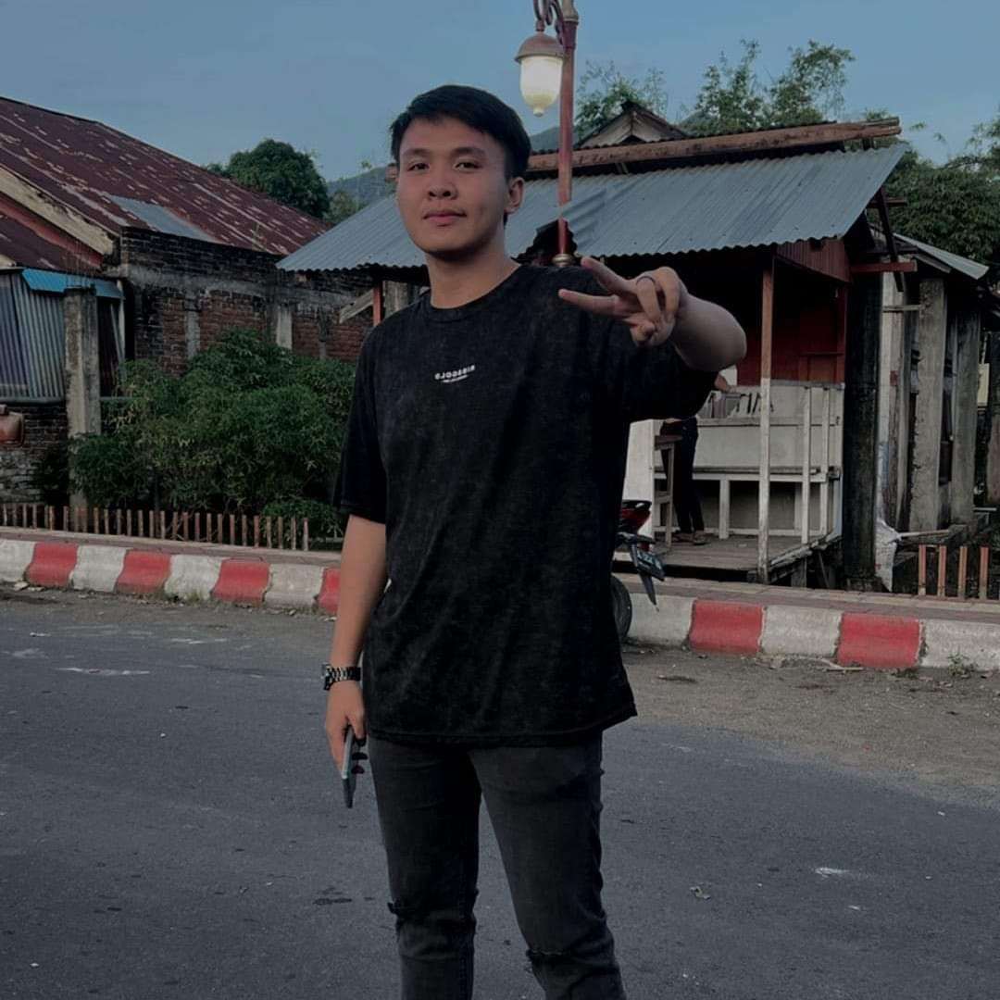

Home
Halo semua,
Terima kasih telah mengunjungi Website saya, sebelumnya perkenalkan nama saya Forlan Okin Antou dengan nim 220211060219 dari prodi Informatika jurusan Elektro fakultas teknik Unsrat. Pada kesempatan kali ini saya ditugaskan untuk membuat sebuah website sederhana, kiranya bisa diterima oleh para Dosen.
